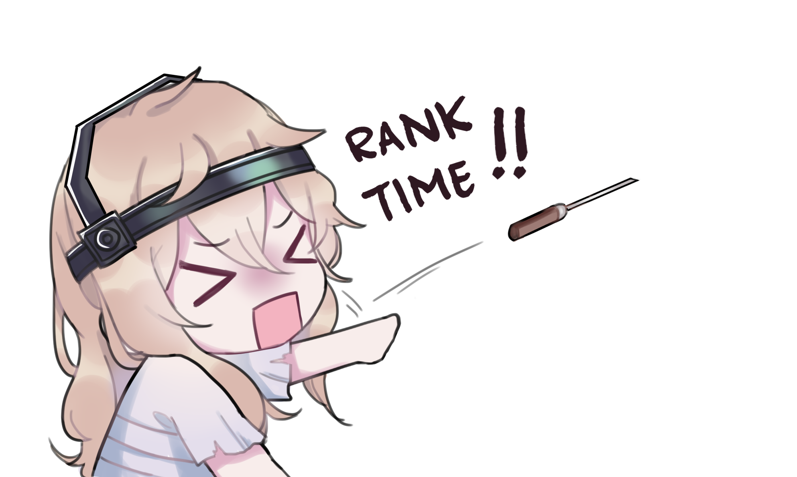

Introduction of ME!
1st Sculptor S18! Still S Badge. Identity V Project Website.
Main content: Identity V
Hunter Main:
Sculptor (S16 10th Sculptor)(S17 2nd Sculptor)(S18 1st Sculptor) (S19 3rd Sculptor)(S20 6th Sculptor)(S21 1st Sculptor)(S22 3rd Sculptor) (S23 2nd Sculptor)(Season 24: Current Season. Not ranking just yet.)
Secondary Mains:
Disciple (B Badge Disciple)
The Breaking Wheel (A Badge Breaking Wheel)

Website Tutorial
Hey Sugarbuns! This will be a website project of mine as practice! But ofc that's enough of that. Let's get onto the real things shall we?
In this page, it will be short(long) and simple.
For all devices, your hunter and survivor page navbar will be on the top!
ALSO!!! For mobile, sorry the page navbar wont be working bc I need JS to get that working :')), haven't
learned that yet and
most likely won't until the professor taught me. I've had enough of learning all these CSS in my free
time xS
For Ipad/PC devices. If your device is wide enough. You'll have an extra navbar that will be at the side!
Right hand side will be a mini popular uploads section. Mostly for Guides/Tierlist/Account Migration and Account Recovery.
A Little Intro
Hey Sugarbuns! Now you've made it this far. In this page there is only a home page, hunter and survivors page alongside with a "Channel's page/About Page". All and all, that should be more than enough for this website! Hopefully we can add music in here too soon with Javascript. Just like the Official Identity V Website.
About me
For those of you who know me. I go by Yuu. Channel name is Kuroshiro Gaming, some call me Kuro, some call me Shiro. Some others also call me sh*t xD. It's really up to you to decide!
I have been playing Identity V since July/August of 2020. I actually knew this game when it came out
first. Never touched it because of network issues at the time (5 years ago).
Now as you can see I am a slowly built up a community of my own. Most of you know me for my Tierlist and
Galatea Guides. But ofc! I still hold myself proud as a mediocre player in NA/EU.
Website Tutorial
Hey Sugarbuns! This will be a website project of mine as practice! But ofc that's enough of that. Let's get onto the real things shall we?
In this page, it will be short(long) and simple.
For all devices, your hunter and survivor page navbar will be on the top!
ALSO!!! For mobile, sorry the page navbar wont be working bc I need JS to get that working :')), haven't
learned that yet and
most likely won't until the professor taught me. I've had enough of learning all these CSS in my free
time xS
For Ipad/PC devices. If your device is wide enough. You'll have an extra navbar that will be at the side!
Right hand side will be a mini popular uploads section. Mostly for Guides/Tierlist/Account Migration and Account Recovery.
Happy 10k Subscribers!
WE'VE REACHED 10,000 SUGARBUN COUNTS!!!!!!!!
It's been a fantastic 2 year journey and I can't thank you guys enough for the support!!!
As I've promised as well! I will do what I promised when I reach 10k, we haven't reached there yet but just less than 500 more to go! If you're wondering what it is then go check it out. It's on the channel too.
Giveaway Event
We also did several streams to accumulate money for the Giveaway. We have amassed a total of 85€ worth of skins which is basically 7 skins. It'll most likely be 1 winner from members, 3 from Na/Eu server and 3 from Asia server! So please look forward to that! The skin giveaway will be between the choice of Annie - The Toy Merchant, Or Mary - The Bloody Queen